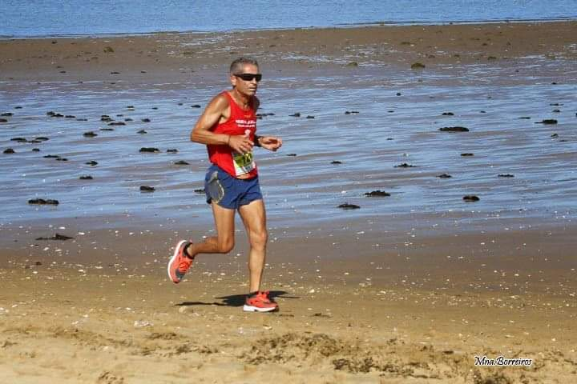

Mi trayectoria atlética
Una vida entre kilómetros, carreras y nuevos caminos
Mi historia
Mis carreras
Entrenamiento
La lesión
Marcha atlética
Galería
♫

Una vida entre kilómetros, carreras y nuevos caminos